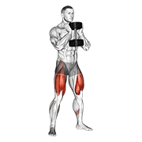
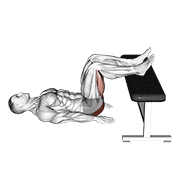
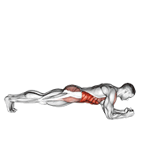

🏃 Cardio · 20 min
Cinta · 20 min de intervalos. 5 min andando para calentar. Luego 8 rondas de 1 min a ritmo exigente (trote o marcha rápida) + 1 min andando suave. Termina con 2 min andando para bajar pulsaciones.
🏋️ Fuerza · 25 min
Descanso 45-60 seg entre series. Peso que te deje 1-2 repeticiones en reserva.

Dumbbell goblet squat
3 × 12Baja controlada, rodillas hacia fuera
Cómo hacerlo
- Ponte de pie con los pies separados a la altura de los hombros, sosteniendo una mancuerna verticalmente contra el pecho con ambas manos.
- Manteniendo el pecho erguido y el core activado, baja el cuerpo a una posición de sentadilla empujando las caderas hacia atrás y flexionando las rodillas.
- Continúa bajando hasta que los muslos queden paralelos al suelo, o tan abajo como puedas hacerlo cómodamente.
- Haz una pausa por un momento en la parte inferior, luego empuja con los talones para regresar a la posición inicial.
- Repite el número de repeticiones deseado.

Dumbbell romanian deadlift
3 × 12Espalda recta, nota el estiramiento de isquios
Cómo hacerlo
- Ponte de pie con los pies separados a la altura de los hombros, sujetando una mancuerna en cada mano con un agarre prono.
- Manteniendo la espalda recta y el core activado, inclínate desde las caderas y baja las mancuernas hacia el suelo, permitiendo que las rodillas se flexionen ligeramente.
- Baja las mancuernas hasta sentir un estiramiento en los isquiotibiales, luego empuja con los talones y activa los glúteos para volver a la posición inicial.
- Repite el número de repeticiones deseado.

Dumbbell lunge
3 × 10 por piernaCómo hacerlo
- Ponte de pie con los pies separados a la altura de los hombros, sujetando una mancuerna en cada mano.
- Da un paso adelante con el pie derecho, bajando el cuerpo hasta una posición de zancada.
- Mantén la espalda recta y el pecho erguido mientras bajas el cuerpo.
- Empuja con el talón derecho para regresar a la posición inicial.
- Repite con la pierna izquierda.
- Alterna las piernas el número de repeticiones deseado.

Glute bridge two legs on bench (male)
3 × 15Aprieta glúteo arriba 1 seg. Usa el banco
Cómo hacerlo
- Siéntate en el borde de un banco con la espalda apoyada en él y los pies planos sobre el suelo.
- Coloca las manos en el banco junto a las caderas para mayor apoyo.
- Activa los glúteos y los isquiotibiales, luego levanta las caderas del banco hasta que el cuerpo forme una línea recta desde las rodillas hasta los hombros.
- Haz una pausa por un momento en la parte superior, luego baja lentamente las caderas de vuelta a la posición inicial.
- Repite el número de repeticiones deseado.

Front plank with twist
3 × 30 segCore apretado, cadera estable
Cómo hacerlo
- Comienza en posición de plancha alta con las manos directamente debajo de los hombros y el cuerpo en línea recta de la cabeza a los pies.
- Activa el core y los glúteos para mantener una posición estable.
- Gira el torso hacia la derecha, levantando el brazo derecho y extendiéndolo hacia el techo.
- Mantén las caderas y las piernas estables mientras giras.
- Mantén la posición por un momento, luego regresa a la posición inicial.
- Repite el giro hacia el lado izquierdo.